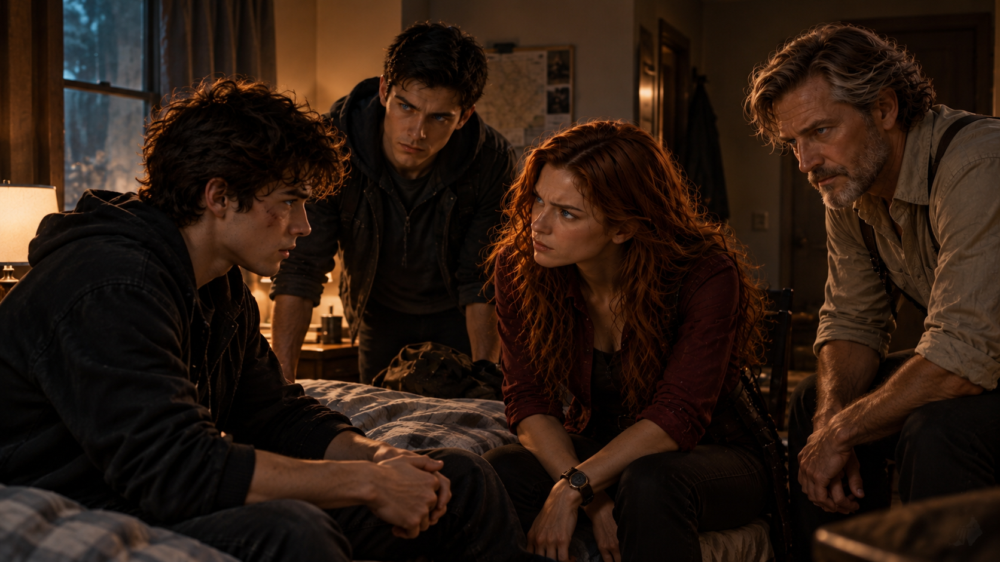

WHITE MAGIC ART STUDIO
第五章
安德烈家族的秘密
滴。
滴。
滴。
規律的聲響，在耳邊反覆迴盪。
柴克皺起眉頭。
肩膀沉重得像是壓著一塊石頭，稍微動一下，便傳來令人不適的疼痛。
他試著睜開眼睛。
映入眼簾的是一片白色天花板，以及一盞陌生的日光燈。
「……醫院？」
「嚴格來說，不是。」
一道熟悉的聲音從旁邊傳來。
柴克緩緩轉頭，這才發現傑西正坐在窗邊。
「這裡是東湖地下教會。」
柴克怔怔地望著他。
沒有回答。
「跟你之前去過的東湖教會不太一樣。」
傑西露出溫和的笑容，卻沒有得到任何回應。
他微微皺眉。
「柴克？」
記憶突然湧了回來。
地下書房。
怪物。
鮑勃。
那些漆黑的液體。
克里斯化成的綠色程式碼。
安娜手中的雙頭重劍。
還有媽媽。
金色雷光。
以及那個令他無法接受的事實。
所以，真的只有我不知道。
柴克猛然坐起！
「媽呢？」
劇烈的疼痛瞬間從肩膀傳來。
「嘶——！」
「Z！」
安娜立刻衝到床邊。
柴克這才發現，妹妹也在房間裡。
克里斯則站在門旁，神情疲憊地望著他。
「你已經昏迷兩天了。」傑西說。
柴克根本沒有在聽。
「媽媽呢？」
「在隔壁。」
安娜連忙握住他的手。
「她沒事，只是還沒有醒過來。」
柴克看向妹妹。
安娜的眼睛很紅，眼底還帶著明顯的疲憊。
大概這兩天都沒有好好休息。
「我想去看她。」
「等等。」
克里斯走了過來。
「你才剛醒。」
「我要看她。」
「柴克——」
「她為了救我變成那樣，我至少要知道她還活著吧？」
房間突然安靜下來。
安娜握緊他的手。
「她真的沒事。」
柴克望著妹妹。
過了一會兒，終於緩緩點頭。
「……好。」
他重新靠回床頭。
沒有人說話。
然而，在場的四個人都明白。
接下來那場談話，已經無法再逃避了。
最後，還是柴克先開口。
「鮑勃是什麼？」
克里斯下意識地看向傑西。
「不要看他。」
柴克直直盯著哥哥。
「我在問你。」
克里斯停頓片刻。
「巫師。」
「什麼意思？」
「曾經是聖術師的人。」
「聖術師又是什麼？」
「柴克……」
「那隻怪物呢？」
安娜輕聲回答：
「惡魔。」
柴克轉頭看向她。
「妳殺了牠？」
安娜沒有回答。
但她的沉默，已經足夠說明一切。
柴克緩緩點頭。
「很好。」
「Z……」
「所以。」
他抬起眼睛，望向房間裡的三個人。
「巫師是真的。」
沒有人說話。
「惡魔是真的。」
依舊沉默。
「地下室那些書，也都是真的。」
傑西輕輕點頭。
柴克低下頭。
「我爸留下來的那些東西……也是真的。」
他下意識地伸手摸向胸口。
卻什麼也沒有摸到。
柴克愣住。
「……我的項鍊呢？」
傑西的神情微微一變。
「柴克。」
「那是我爸留給我的。」
「我知道。」
「在哪裡？」
傑西沉默片刻。
「消失了。」
柴克猛然抬頭。
「什麼叫消失了？」
「那顆水晶本身就是一道封印。」
「封印？」
「你的封印。」
柴克怔怔地望著他。
傑西繼續說道：
「當你在地下室解開它的時候，守護鎖鑰的使命就完成了。」

「等等。」
柴克皺起眉頭。
「你怎麼知道地下室那本書寫了什麼？」
傑西沒有立刻回答。
柴克盯著他。
「前幾天，你說你認識我爸。」
「對。」
「你到底認識他多少？」
傑西緩緩站起身。
「很多。」
「多少？」
「多到——」
他望著柴克。
「你出生的那一天，我就在那裡。」
柴克的表情瞬間凝固。
房間突然安靜得令人窒息。
「……什麼？」
傑西沒有移開視線。
「我看著你長大。」
「不可能。」
「是真的。」
「我根本沒見過你！」
「你沒見過我。」
傑西平靜地回答。
「不代表我沒見過你。」
柴克怔怔地望著他。
某種情緒，正從最初的震驚逐漸轉變成憤怒。
「所以……你也知道。」
傑西沒有否認。
柴克轉頭看向克里斯，又看向安娜。
「所以全部都知道。」
「Z——」
「不要。」
他抽回被安娜握住的手。
安娜僵住。
「我現在只要答案。」
克里斯往前走了一步。
「你想知道什麼？」
柴克抬頭看著哥哥。
「全部。」
「柴克……」
「全部。」
克里斯沉默了。
隨後，他轉頭望向傑西。
傑西輕輕點頭。
「好。」
克里斯拉過一張椅子，在柴克床邊坐下。
沒有綠色投影。
沒有任何異能。
他只是像平常一樣，坐在弟弟面前。
「我們家不是普通人。」
柴克冷笑一聲。
「這個我已經看出來了。」
克里斯沒有接他的玩笑。
「很久以前，這個世界開始存在一些普通人無法感知的東西。」
「惡魔？」
「其中之一。」
「還有什麼？」
「很多。」
「例如？」
「你現在知道太多也沒什麼好處。」
柴克立刻瞪向他。
「你們已經用這句話騙我十七年了。」
克里斯停住。
「……好。」
他輕輕嘆了口氣。
「那我從頭說。」
克里斯抬起右手。
幾顆翡翠綠色的光點，緩緩浮現在掌心上方。
柴克的身體下意識地往後縮了一下。
克里斯注意到了。
他的手停在半空中。
「如果你不想看，我可以不用。」
柴克望著哥哥。
猶豫片刻後，終於開口。
「……用吧。」
克里斯輕輕張開手掌。
綠色光點緩緩升起。
這一次，沒有兩天前那場充滿攻擊性的程式碼風暴。
只有一些安靜漂浮的光粒，在空氣中逐漸排列、組合。
最後，形成六個不同的符號。
雷。
水。
土。
風。
火。
木。
「世界最初的時候，神以六種元素建構了這個世界。」
六個符號在空中緩緩旋轉。
「後來，墮落天使進入世界。人類的罪、恐懼與仇恨，成了牠們能夠利用的力量。」
黑色陰影逐漸浮現在六道光芒之間。
「惡魔，也因此出現了。」
柴克安靜地看着。
「所以，神揀選了一些人。」
六道模糊的人影，出現在光芒之中。
「祂將創造世界的六種力量交給他們，讓他們能夠對抗黑暗。」
柴克盯著那些影像。
「聖術。」
「對。」
「所以你們叫聖術師？」
「對。」
柴克指向克里斯。
「你？」
「是。」
「安娜？」
「也是。」
柴克轉頭看向妹妹。
安娜輕輕點頭。
「爸？」
克里斯沉默了一瞬。
「也是。」
柴克又望向傑西。
「那你呢？」
傑西微微抬起手。
一道紫色雷光突然閃過。
床頭的馬克杯瞬間消失。
下一秒，竟出現在窗邊。
柴克怔怔地望著杯子。
「……」
傑西微微一笑。
「也是。」
柴克重新靠回枕頭。
「好。」
他伸手揉了揉臉。
「所以我們家是一群會放閃電的教徒。」
安娜差點笑出聲，又硬生生忍住。
克里斯的嘴角也微微抽動。
「非常粗略地說，是這樣。」
「我現在只能接受粗略版。」
「合理。」
房間裡緊繃的氣氛，終於稍微緩和了一些。
但也只有短短片刻。
柴克再次抬起頭。
「那我呢？」
克里斯沒有立刻回答。
柴克注意到了。
「又來了。」
「什麼？」
「你們那個表情。」
「哪個表情？」
「『我們知道一件會讓柴克人生爆炸的事情，但不知道該不該講』的表情。」
安娜低下頭。
「Z……」
「講。」
這一次，是傑西開口。
「你也是聖術師。」
柴克緩緩點頭。
「但不只如此。」
房間再次陷入沉默。
柴克看著他，無奈地嘆了口氣。
「當然。」
他抬頭望向天花板。
「為什麼每次都還有『不只如此』？」
傑西沒有笑。
「因為你父親在你出生後，把你絕大部分的力量封印了。」
柴克愣住。
「……爸？」
「對。」
「為什麼？」
沒有人回答。
柴克轉頭看向克里斯。
「為什麼？」
「這是他的決定。」
「我問的是原因。」
「柴克……」
「他死了十幾年，卻還可以決定我能知道什麼、不能知道什麼？」
克里斯沉默。
柴克的聲音逐漸提高。
「你們也是！」
「Z……」
「妳不要叫我 Z！」
安娜瞬間僵住。
柴克自己也愣了一下。
那句話出口的瞬間，他就知道自己說得太重了。
安娜低下頭。
「……好。」
柴克閉上眼睛。
「對不起。」
「沒關係。」
「我不是在氣妳。」
「我知道。」
「不。」
柴克重新睜開眼睛。
「其實，我就是在氣妳。」
安娜緩緩抬頭。
「我在氣你們每一個人。」
沒有人反駁。
「我昨天——」
柴克停頓了一下。
「不，兩天前。」
連時間都已經亂了。
「我看到媽拿出槍的時候，我根本不知道她是誰。」
他轉頭望向克里斯。
「然後，我看到你從電腦裡跑出來。」
克里斯剛想開口。
「我知道這句話聽起來很好笑，但現在不要笑。」
克里斯默默閉上嘴巴。
「然後我下樓。」
柴克看向安娜。
「我看到我妹妹，拿著一把比她還高的劍。」
安娜低下頭。
「你們知道那是什麼感覺嗎？」
沒有人回答。
柴克深吸了一口氣。
「我不是突然發現這個世界有魔法。」
他望著眼前的三個人。
「我是突然發現——」
他的聲音開始顫抖。
「我根本不認識自己的家人。」
房間陷入死寂。
這一次，傑西沒有替任何人說話。
克里斯也沒有。
安娜的眼淚緩緩落下。
柴克看見了，卻沒有停下。
「我為了你們不來看比賽，跟媽吵成那樣。」
他的聲音越來越低。
「我真的以為……你們根本不在乎。」
安娜連忙擦掉眼淚。
「我們在乎。」
「那為什麼不來？」
沒有人回答。
「為什麼？」
安娜深吸了一口氣。
「因為我們知道你會贏。」
柴克愣住。
「……什麼？」
「我們知道。」
安娜抬起頭，望著哥哥。
「你一直以為，自己的反應速度只是天生比較好。」
柴克沒有說話。
「但不是。」
克里斯接著說：
「至少，不完全是。」
他再次抬起手。
綠色光粒迅速聚集，在半空中形成一道人影。
那道人影開始移動。
奔跑。
跳躍。
轉身。
反應速度與身體協調能力，都遠遠超出一般人的表現。
「聖術力量被封印，不代表所有影響都會消失。」
克里斯看向弟弟。
「你的神經反應、動態視覺、身體協調能力，都比普通人優秀。」
柴克怔怔地望著影像。
「所以你只花幾個月，就能做到別人可能需要練習很多年才能完成的事。」
柴克的臉色逐漸變了。
「你是在說……」
他停住。
「我作弊？」
「不是。」
克里斯立刻回答。
「我沒有說你沒有努力。」
「但你的意思不是就是我不是完全靠自己嗎？」
「柴克……」
「我問你。」
柴克直直望著哥哥。
「如果我沒有這些東西——」
他指向自己的身體。
「我還能投進那一球嗎？」
克里斯沉默了。
而那份沉默，已經足夠讓柴克得出自己的答案。
他緩緩移開視線。
「……難怪。」
安娜皺起眉頭。
「什麼？」
「你們不來。」
「Z——」
「因為那根本不是我的比賽。」
「不是！」
安娜突然提高聲音。
柴克愣了一下，轉頭望向她。
「我們沒有去，不是因為覺得你是騙子！」
眼淚不斷從安娜的臉頰滑落。
「我們只是不知道該怎麼支持你！」
柴克沒有說話。
「我們知道你有天賦。」
安娜繼續說。
「可是我們也知道，你每天練球練到多晚。」
「我們知道你真的喜歡跟隊友一起打球。」
「也知道那場比賽對你有多重要。」
她吸了一口氣。
「所以每一次你問我們要不要去，我都很想說好。」
柴克怔怔地望著她。
「可是我們也怕。」
「怕什麼？」
「怕我們站在那裡……」
安娜的聲音微微顫抖。
「就像在告訴你，這一切完全沒有問題。」
柴克低下頭。
「所以，我們選了一個最爛的方法。」
安娜苦笑。
「我們什麼都不說。」
房間再次安靜下來。
「對不起。」
這一次，柴克沒有立刻接受。
也沒有拒絕。
他只是靜靜坐在床上，望著自己的雙手。
過了很久，才再次開口。
「所以……老爸為什麼要封印我的聖術？」
傑西終於走向床邊。
「因為你不是普通的聖術師。」
柴克抬起頭。
「不然我是什麼？」
傑西沒有立刻回答。
他伸手取下掛在脖子上的十字架，輕輕放進柴克掌心。
「在聖術師的歷史裡，每個聖術師只能擁有一種聖術屬性。」
柴克低頭望著十字架。
「但是，曾經有一個人，同時掌握了六種聖術。」
「誰？」
「我們稱呼他為拉比。」
柴克皺起眉頭。
傑西望著他。
「其實，你也認識他。」
「我認識？」
「至少，你曾經以為自己認識。」
傑西抬手，指向牆上的十字架。
柴克順著他的目光望去。
幾秒鐘後，他忽然明白了。
「……那位救世主？」
傑西點頭。
柴克忍不住笑了一聲。
不是因為好笑。
而是今天聽見的事情，已經荒謬到超過他所能理解的範圍。
「等等。」
他重新坐直身體。
「你現在是跟我說，祂會魔法？」
「不是魔法。」克里斯立刻糾正。
「現在不是糾正術語的時候！」
「……」
克里斯一時不知道該如何回答。
「克里斯，沒關係的。」
傑西溫柔地看了他一眼。
接著，重新望向柴克。
「拉比不是因為聖術，才成為救世主。」
柴克安靜下來。
「力量從來不是他的核心。」
傑西的語氣漸漸放緩。
「他確實擁有六種聖術。」
六道不同顏色的光芒，在房間中央緩緩亮起。
「但他來到世上，不是為了證明自己比人類更強。」
六道光芒逐漸收斂。
「他選擇成為人。」
「與人一起生活。」
「感受飢餓、疲憊與悲傷。」
柴克靜靜聽著。
「最後——」
傑西望向十字架。
「為了救贖人類，他犧牲自己，完成了最偉大的聖術。」
柴克握著十字架的手指微微收緊。
「贖罪祭。」
「對。」
「地下室那本書裡有寫。」
傑西輕輕點頭。
「而在他離開之前，傳說記載，他將象徵權柄的六翼分別交給六位跟隨者。」
六道光芒逐漸化成六片羽翼，在半空中緩緩展開。
「從那之後，六翼的責任便在不同世代之間延續。」
柴克望著那些羽翼。
「所以……每一代都會有新的繼承者？」
「對。」
「由誰決定？」
傑西微微一笑。
「拉比。」
柴克皺起眉頭。
「不是上一代選下一代？」
「不是。」
「也不是爸爸傳給兒子？」
「不是。」
傑西搖頭。
「沒有人能夠決定六翼會選上誰。即使是上一代的繼承者，也無法指定自己的後代接任。」
柴克沉默了。
傑西望著他，緩緩開口。
「而你，就是這一代被選上的人。」
金色雷光在六片羽翼之中亮起。
「雷之翼。」
柴克怔怔地望著那道光芒。
過了很久，才終於開口。
「……為什麼是我？」
「不知道。」
傑西回答得很快。
柴克猛然抬頭。
「你不知道？」
「不知道。」
「不是什麼命中注定？」
「也許是。」
「神特別選我？」
「也許。」
柴克皺起眉頭。
「你這個牧師怎麼什麼都不知道？」
傑西笑了。
「因為我是牧師，不是神。」
柴克愣了一下。
接著，終於忍不住低頭笑了。
很短。
但這次是真的笑了。
傑西等他安靜下來，才繼續說：
「我們唯一能確定的是，你出生的那個夜晚，亞斯蘭之星出現了。」
柴克的笑容逐漸消失。
「……照片。」
「對。」
「地下室那張？」
「那是你父親拍的。」
柴克看著傑西。
「所以，他知道。」
「從你出生那天起，就知道。」
「我會變成這個……雷翼？」
「他相信你會。」
「所以他封印我。」
「對。」
柴克的表情逐漸冷了下來。
「……他不想要我？」
傑西愣住。
「什麼？」
「如果我一出生，就是這個什麼繼承者……」
柴克望著他。
「所以他害怕我？」
「不是。」
「那為什麼要把我的力量藏起來？」
傑西沉默了幾秒。
「因為他太愛你。」
柴克的眉頭瞬間皺起。
「這句話很像所有大人做完傷害小孩的事情後，會講的話。」
「我知道。」
傑西沒有辯解。
「所以，我只告訴你，他真正說過的意思。」
柴克安靜地望著他。
傑西在床邊坐下。
「你父親曾經說過，拉比最偉大的地方，不是他擁有六種力量。」
「而是他明明擁有力量，卻願意成為普通人。」
柴克低下頭。
「詹姆斯知道，如果你從小就被所有人稱為雷翼，被告訴自己是未來的領袖，被訓練成一件武器——」
傑西停頓了一下。
「你可能永遠不會知道，普通人的生命有多珍貴。」
柴克沒有說話。
「所以，他想先讓你當柴克。」
「不是繼承者。」
「不是英雄。」
「不是雷翼。」
傑西望著他。
「只是他的兒子。」
柴克的眼眶漸漸紅了。
「他希望你會有朋友。」
「會贏，也會輸。」
「會喜歡上一件跟拯救世界毫無關係的事情。」
柴克忽然想起籃球。
「會因為很小的事情開心。」
「也會因為很小的事情難過。」
傑西的聲音很輕。
「因為如果有一天，你真的必須保護這個世界——」
他停頓片刻。
「他希望你知道，自己保護的究竟是什麼。」
房間裡沒有人說話。
柴克低着頭。
十字架靜靜躺在他的掌心。
「所以……」
他的聲音很輕。
「他不是因為怕我，才把力量藏起來。」
「不是。」
傑西搖了搖頭。
「他只是希望，在世界告訴你『你很特別』以前——」
「你先知道，怎麼當一個人。」
柴克閉上眼睛。
一滴眼淚落在手背上。
他立刻伸手擦掉。
「……真討厭。」
傑西微微一笑。
「誰？」
「我爸。」
「嗯。」
「死了還可以搞得這麼煩。」
傑西低頭笑了一聲。
「這部分，確實很像他。」
柴克抬起頭。
「所以……」
他停頓片刻。
終於問出了那個一直不敢問的問題。
「我爸不是死於車禍。」
整個房間瞬間安靜下來。
克里斯低下頭。
安娜咬住嘴唇。
傑西沒有回答。
柴克望著他。
「對吧？」
過了很久，傑西才緩緩開口。
「……不是。」
柴克的呼吸停滯了一瞬。
「那他怎麼死的？」
傑西的神情變了。
「柴克。」
「不要。」
柴克立刻打斷他。
「不要又跟我說，我還不能知道。」
「不是不能。」
「那就告訴我。」
傑西望著他。
眼眶漸漸泛紅。
「我會告訴你。」
柴克安靜地等待。
「但不是今天。」
柴克的臉色瞬間沉了下來。
「傑西——」
「因為那不是一段可以用三句話講完的故事。」
傑西平靜地說。
「而且，有些部分——」
他停頓了一下。
「應該由另一個人親自告訴你。」
「誰？」
傑西沒有回答。
柴克正準備繼續追問，克里斯卻突然站了起來。
「今天夠了。」
柴克立刻瞪向他。
「你也來？」
「對。」
克里斯指向他的肩膀。
「因為你才剛從差點被砍死的狀態醒過來，而且在短短二十分鐘內，得知惡魔是真的、我們全家會放電、教堂拜的神是一位聖術師，然後你還是某種被選中的世界級繼承人。」
柴克沉默了。
「……你這樣講真的很荒謬。」
「歡迎來到我的童年。」
安娜終於忍不住笑了一下。
柴克轉頭看向她。
兩人的視線碰上。
安娜的笑容逐漸消失。
「Z。」
這一次，柴克沒有糾正她。
「對不起。」
柴克知道。
她不是只在為今天的事情道歉。
他望著妹妹。
「我還在生氣。」
安娜輕輕點頭。
「我知道。」
「可能會氣一陣子。」
「可以。」
「而且妳那把劍很誇張。」
安娜愣住。
「……哪方面？」
柴克挑起眉毛。
「妳才多高？」
「Z！」
柴克終於真正笑了出來。
安娜抓起旁邊的枕頭，朝他丟了過去。
「喂！我還是傷患！」
「活該！」
克里斯伸手接住安娜準備丟出的第二顆枕頭。
「好了。」
他轉頭看向妹妹。
「妳去睡一下。」
「可是——」
「兩天。」
克里斯說。
「妳已經兩天沒好好睡了。」
安娜看向柴克。
柴克輕輕點頭。
「去吧。」
安娜猶豫片刻，終於走到床邊。
她小心翼翼地抱了哥哥一下，刻意避開受傷的肩膀。
「你醒來就好。」
柴克的神情柔和下來。
「嗯。」
安娜終於離開了房間。
傑西也緩緩站起身。
「我去看看你媽媽。」
走到門口時，柴克突然叫住他。
「傑西。」
傑西回過頭。
「謝謝。」
傑西微微一笑。
「不用。」
「但我還是很生氣。」
「我知道。」
「你也有份。」
「我知道。」
「很好。」
傑西笑著關上房門。
房間裡，只剩下兄弟兩人。
克里斯重新拉過椅子，在床邊坐下。
「所以。」
柴克看向他。
「所以？」
「現在你可以正式開始罵我了。」
柴克盯著哥哥。
「你知道我真的很想揍你嗎？」
「知道。」
「十七年耶。」
「知道。」
「你每天都在我面前裝普通人？」
「很累。」
「你還敢抱怨？」
「不敢。」
柴克看著他。
「你什麼時候知道的？」
「從小。」
「多小？」
「比你現在想像得還小。」
柴克重新靠回枕頭。
「所以，我真的完全是最後一個。」
克里斯沒有否認。
「對不起。」
柴克安靜了一會兒。
「如果我沒有自己打開地下室呢？」
克里斯正在整理桌上的藥品，動作突然停住。
「什麼？」
「那個封印。」
柴克望著哥哥。
「如果我沒有找到地下室、沒有碰到那本書，也沒有自己把封印解開——」
他停頓片刻。
「你們打算瞞我多久？」
克里斯沒有立刻回答。
這次的沉默，與之前不太一樣。
彷彿這個問題，他其實早已在心裡想過無數次。
「……至少等你大學畢業。」
柴克愣住。
「大學畢業？」
「嗯。」
「四年？」
「差不多。」
「你還想再騙我四年？！」
「我本來是這麼打算的。」
「克里斯！」
「你問我的，我只是老實回答。」
柴克抓起枕頭，正準備朝哥哥丟去，肩膀卻立刻傳來一陣疼痛。
「嘶——！」
「喂！」
克里斯連忙按住他。
「你才剛醒，別為了揍我又躺回去兩天。」
「我現在覺得很值得！」
克里斯忍不住笑了一下。
但那抹笑容，很快便淡了下來。
「其實……老爸留下的封印，不是只有你自己能解開。」
柴克停住。
「什麼意思？」
「只要是爸的直系血親，也能替你打開。」
柴克怔怔地望著他。
地下書房裡，那些金色文字再次浮現在腦海。
後裔之血。
守護鎖鑰。
直系子嗣。
他忽然明白了。
「……你。」
克里斯輕輕點頭。
「所以你是真的打算有一天——」
「親手幫你解開。」
房間安靜下來。
柴克原本準備好的吐槽，突然卡在喉嚨裡。
「為什麼是大學畢業？」
克里斯低頭整理著桌上的東西。
「因為我覺得那時候差不多。」
「這算什麼理由？」
「那你想聽哥哥版本，還是聖術師版本？」
柴克挑起眉毛。
「有差嗎？」
「差很多。」
克里斯坐回椅子。
「聖術師版本是：等你成年、心智成熟、完成基本教育，有能力理解自己即將承擔的責任之後，再解除封印，是相對安全的選擇。」
柴克盯著他。
「……哥哥版本呢？」
克里斯沉默了一下。
「我想讓你多過幾年自己的生活。」
柴克沒有說話。
「老爸已經替你爭取了十七年。」
克里斯抬起頭，望著弟弟。
「我本來想再替你多爭取四年。」
柴克臉上的怒氣微微停住。
「等你念完大學。」
「打完你想打的球。」
「交你想交的朋友。」
「煩惱一些正常人會煩惱的蠢事。」
克里斯想了想，又補上一句。
「最好還能被教授當個幾科。」
「喂。」
「這樣比較完整。」
柴克白了他一眼。
克里斯笑了笑。
「然後，等你真的準備好了，我會親自告訴你一切。」
他的聲音逐漸認真起來。
「不是讓惡魔告訴你。」
「不是讓巫師拿刀架著你，逼你知道。」
「也不是讓你一個人站在自己家的地下室裡，看著爸爸留下的東西猜。」
克里斯停頓了一下。
「是我。」
他望著弟弟。
「我本來想親口告訴你。」
柴克安靜地看著他。
「然後，親手替我解開封印。」
「對。」
「再告訴我，我是什麼雷翼？」
「……對。」
柴克重新靠回床頭。
「聽起來還是很糟。」
「我知道。」
「我還是會生氣。」
「應該的。」
「搞不好到時候，我還是會揍你。」
克里斯輕輕點頭。
柴克低頭望著自己的雙手。
「所以……我真的自己解開了。」
「嗯。」
「提早四年。」
「嗯。沒有人預期你會自己解開。」
「然後引來一隻惡魔、一個假裝成我媽男朋友的巫師，還差點把我們家拆掉。」
克里斯思考了一下。
「嚴格來說，最後一項主要不是你的責任。」
柴克終於笑了一聲。
克里斯也笑了。
只是那抹笑容裡，仍藏著一絲遺憾。
他原本真的以為——
自己還有四年。
四年，可以讓弟弟只是弟弟。
而不是任何人的繼承者。
「克里斯。」
「嗯？」
「我還是你弟吧？」
克里斯望著他。
「你問這什麼白痴問題？」
「回答。」
「是。」
「沒有什麼……其實我是誰半夜抱到家門口，你們看我可憐才撿回來之類的？」
克里斯盯著他。
「這什麼奇怪的揣測？」
「電影很常這樣演啊……『哈利波特』就是這樣！」
「但『哈利波特』沒有哥哥吧。」
柴克愣了一下。
「……但他有一個對他很差的表兄弟啊！」
「那你到底想怎樣？難道非得讓我親手解開你的封印，證明我們兩個的血都能通過老爸的『直系血親』測試，你才肯相信？」
柴克認真想了一下。
「好像滿有說服力的。」
「謝謝。」
「但《哈利波特》的說法你還是沒有給我一個滿意的回答。」
「閉嘴。」
柴克望著哥哥。
終於笑了。
「沒關係我可以等。」
克里斯站起身，替他拉好被子。
「睡吧。」
「哥。」
「又怎樣？」
柴克閉著眼睛。
「那天你說『全世界只有我可以動我弟弟！』...真的很酷。」
克里斯低頭望著弟弟。
過了很久，才輕聲回答。
「閉嘴...」
走廊裡。
傑西輕輕關上二一三號病房的門。
對面的牆邊，仍站著一名男人。
黑色大衣。
雙手插在口袋裡。
看起來已經等了很久。
傑西望著他，無奈地嘆了口氣。
「你到底打算站多久？」
雷沒有回答。
「他醒了。」
「我知道。」
「他已經知道詹姆斯不是死於車禍了。」
雷的眼神微微一動。
「……嗯。」
「他也問了，究竟該由誰告訴他真相。」
雷沉默。
傑西望著他。
「你知道我指的是誰。」
「不知道。」
「雷。」
「別煩我。」
傑西忍不住笑了一聲。
「十五年。」
雷皺起眉頭。
「什麼？」
「你躲在他看不到的地方，整整十五年。」
「我沒有躲。」
「喔，對。」
傑西點點頭。
「你只是每天非常剛好，都出現在他附近。」
雷冷冷地瞥了他一眼。
「我答應過詹姆斯。」
「我知道。」
「那就夠了。」
雷轉身準備離開。
「不夠。」
他的腳步停住。
傑西望著他的背影。
「詹姆斯要你幫助他。」
雷沒有回頭。
「不是叫你永遠只當他的影子。」
走廊裡一片安靜。
過了很久，雷才終於開口。
「現在還不是時候。」
「什麼時候才是？」
沒有回答。
雷重新邁開腳步，沿著走廊緩緩離去。
傑西站在原地，望著他的背影。
直到那件黑色大衣消失在轉角。
他才低頭笑了一下。
「詹姆斯。」
傑西輕聲說。
「你弟弟還是跟以前一樣。」
他停頓片刻，無奈地搖了搖頭。
「很不老實呢。」